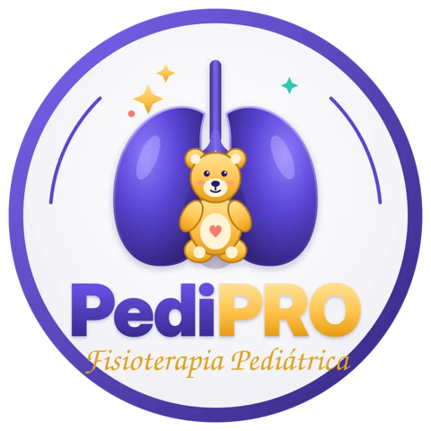

PediPRO por RespirePROO PediPRO é um app para o fisioterapeuta usar nas sessões com crianças. Ele reúne 10 jogos de sopro, a Jornada do Fôlego e avaliações pediátricas. A sessão fica mais leve para a criança e mais organizada para você.
12x de R$ 20,37 ou R$ 197 à vista · acesso por 12 meses · garantia de 7 diasO exercício é repetitivo, a atenção dura pouco e a família quer ver evolução. Sem um recurso lúdico, a sessão vira negociação, e a adesão cai justamente quando a criança mais precisa.
A criança sopra e o jogo responde. O exercício vira brincadeira e a sessão rende mais.
Fases para avançar a cada sessão. A criança quer voltar para a próxima etapa.
Reconhecimento para a criança ao concluir a jornada. A família vê o progresso.
Escalas e testes usados na fisioterapia respiratória infantil, sempre com a fonte científica.
Os estudos por trás de cada conduta, para consultar quando precisar.
Só entra no app o que tem artigo publicado ou norma vigente por trás.
Use as avaliações pediátricas do app para registrar o ponto de partida.
Escolha o jogo de sopro que combina com o objetivo e a idade da criança.
A criança avança na Jornada do Fôlego e você mostra a evolução para a família.
Quer prescrever carga de Treinamento Muscular Inspiratório para crianças? Isso está no TMIPRO, o nosso curso completo de TMI.
Menos de R$ 17 por mês para ter os 10 jogos, a Jornada do Fôlego e as avaliações sempre à mão.
Fisioterapeuta respiratória, professora e mentora. Mãe do Bento e da Beatriz.
Fisioterapeuta respiratória, professora e mentora. Mãe do Pedro Henrique.
Para fisioterapeutas que atendem crianças. Quem usa o app é o profissional, durante a sessão. Para as famílias, temos o AsmaKidsPRO, que o fisio pode indicar.
12 meses a partir da compra. Depois disso, você pode renovar.
Não. Para registrar pacientes, avaliações e evoluções na nuvem, use o KinePRO, o nosso prontuário.
Sim. Alunos do TMIPRO e do AtualizaPRO têm condição especial. Fale com o suporte.
Você tem 7 dias de garantia. Pedimos o reembolso pela Kiwify e você recebe o valor de volta.